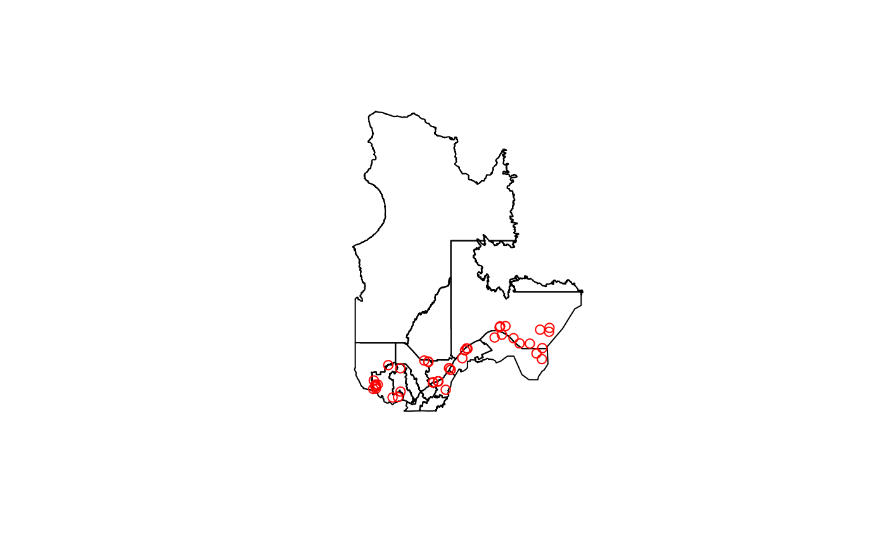

database-access-functions.RmdThe ratlas package provides functions to interact with Biodiversité Québec’s database Atlas. For most use cases, ratlas get functions such as get_taxa, get_observations, get_datasets, etc should be used, as they are designed to be more user-friendly. However, in some cases, it is useful to directly access the database ressources.
This vignette describes how to do so using low-level functions read_table_data and read_function_data, on which ratlas get functions are based and is intended for advanced users.
Atlas database is a PostgreSQL database. It contains several tables, views, materialized views, functions, etc. Data is stored and made available through those resources. While table store data, views and materialized views behaves as tables and are used to store queries, and functions are used to perform operations on the data. They are organized by different schema, each of them representing a different application layer of the database. The following schema are available: * public: Raw biodiversity data is stored here in tables such as observations, taxa_obs, datasets, variables, efforts, etc. This schema is relational, as joins between tables are required to retrieve data. Data may be protected by access rights and require authentication to be accessed through a token (see readme). * api: This schema contains views and functions that are used to access data from the public schema. It performs joins between tables, and returns data in a more user-friendly format. This schema is used by the ratlas get functions. Data may be protected by access rights and require authentication to be accessed through a token (see readme). * atlas-api: This schema contains tables, views and functions required for the operation of the ‘atlas web portal’. All displayed information and summary statistics are computed from resources in this schema. Data at this layer is not protected by access rights and can be accessed without authentication.
Documentation for tables and functions are made availabe in atlas-db repository documentation.
The read_table_data() function is used to read data from a PostgreSQL table. It takes several arguments, including the name of the table, the schema that the table belongs to, and the authentication token that is required to access the database.
Here’s an example of how to use the read_table_data() function to read data from a table named “employees” in the “public” schema:
library(ratlas)
data <- get_table_data("taxa_obs", schema = "public")The read_table_data() function returns a data.frame object containing the data from the table. The data.frame columns are named after the table columns. The data.frame row names are the row numbers of the table.
The read_table_data() function also allows you to filter the data that is returned by specifying additional arguments. For example, you can use the ... argument to specify a filter condition:
data <- get_table_data("taxa_obs", schema = "public", id = 1)
# Or
data <- get_table_data("taxa_obs", schema = "public", scientific_name = 'Acer saccharum')
head(data)
#> # A tibble: 1 x 7
#> id scientific_name authorship rank created_at modified_at modified_by
#> <int> <chr> <chr> <chr> <chr> <chr> <chr>
#> 1 7278 Acer saccharum Marsh. species 2021-11-23T1~ 2021-11-23~ postgres
# Using a list of values
data <- get_table_data("taxa_obs", schema = "public", id = c(1, 2, 3))
head(data)
#> # A tibble: 2 x 7
#> id scientific_name authorship rank created_at modified_at modified_by
#> <int> <chr> <chr> <chr> <chr> <chr> <chr>
#> 1 1 Prunus pensylvanica L. fil. speci~ 2021-11-1~ 2021-11-19~ vbeaure
#> 2 2 Sorbus americana Marsh speci~ 2021-11-1~ 2021-11-19~ vbeaure
data <- get_table_data("taxa_obs", schema = "public", scientific_name = c('Acer saccharum', 'Acer rubrum'))
head(data)
#> # A tibble: 2 x 7
#> id scientific_name authorship rank created_at modified_at modified_by
#> <int> <chr> <chr> <chr> <chr> <chr> <chr>
#> 1 7278 Acer saccharum Marsh. species 2021-11-23T1~ 2021-11-23~ postgres
#> 2 7279 Acer rubrum L. species 2021-11-23T1~ 2021-11-23~ postgresThe limit and select arguments can be used to limit the number of rows returned by the function and to select specific columns from the table.
Those arguments are useful when working with large tables, as they allow you to limit the amount of data that is returned by the function.
data <- get_table_data("taxa_obs", schema = "public", limit = 10)
data <- get_table_data("taxa_obs", schema = "public", select = c("id", "scientific_name"))Many tables in the database contain geometries. For example, the observations table contains a geom column that contains the location of the observation. By default, the read_table_data() function returns a data.frame object with the geometry column as a list of points. However, you can use the output_geometry argument to return the data as a sf object, made available by the sf package. The sf object is our preferred format for working with geometries in R.
regions <- get_table_data("regions", schema = "public", output_geometry = TRUE, type = 'admin', scale = '2') # Administrative regions of Quebec
data <- get_table_data("observations", schema = "public", output_geometry = TRUE, within_quebec = TRUE, limit = 50)
# Plot the regions and the observations
plot(regions$geom)
plot(data$geom, add = TRUE, col = 'red')
By default, the function paginates the results using a number of 500,000 rows per page, as prescribed by .page_limit default value. If the table contains more, the function will automatically download the results in multiple pages and concatenate them into a single data frame.
You can customize the pagination behavior by specifying the limit and offset parameters in the query. The get_table_data() function also provides additional parameters to control the pagination process, such as .n_pages and .page_limit.
Here’s an example of how to use the get_table_data() function to download the 100 rows of a table, starting at row 200:
data <- get_table_data("taxa_obs", schema = "public", limit = 100, offset = 200)In this example, the results are paginated into multiple pages of 1000 rows each.
data <- get_table_data("taxa_obs", schema = "public", .page_limit = 1000)To handle downloading data with very large number of rows, the function makes requests in parallel using multiple cores. The get_table_data() function provides an optional parameter, .cores, to specify the number of cores to use for parallel processing.
By default, the function downloads the results using parallelization using 4 cores, as defined by default value of .cores. The function will automatically determine the number of pages to download and split the work across the specified number of cores. The results are then combined into a single data frame.
Here’s an example of how to use the get_table_data() function to download four pages of data in parallel using 4 cores:
data <- get_table_data("observations", schema = "public", .n_pages = 4, .cores = 4, .page_limit = 1000)The read_function_data() function is used to read data from a PostgreSQL function. It takes several arguments, including the name of the function, the schema that the function belongs to, and the authentication token that is required to access the database. Functions arguments can be passed to the function using the ... argument.
Accepted arguments are described in the function documentation. For example, the atlas_api.obs_summary function takes the following optionnal arguments (taxa_keys, min_year, max_year, region_fid, region_type).
data <- get_function_data("obs_summary", schema = "atlas_api")
head(data)
#> # A tibble: 1 x 11
#> fid obs_count taxa_count taxa_id_list taxa_filter_tags.taxa_tags_fr
#> <int> <int> <int> <list> <lgl>
#> 1 1 22144149 2731 <int [2,731]> NA
#> # i 6 more variables: taxa_filter_tags.taxa_tags_en <lgl>,
#> # region_filter_tags.tags_fr <chr>, region_filter_tags.tags_en <chr>,
#> # region_filter_tags.name_fr <chr>, region_filter_tags.name_en <chr>,
#> # region_filter_tags.subtitle <chr>
data <- get_function_data("obs_summary", schema = "atlas_api", taxa_keys = c(1, 2, 3), min_year = 2010, max_year = 2015, region_fid = 1, region_type = 'admin')
head(data)
#> # A tibble: 1 x 11
#> fid obs_count taxa_count taxa_id_list taxa_filter_tags.taxa_tags_fr
#> <int> <int> <int> <list> <list>
#> 1 1 2755 2 <int [2]> <chr [1]>
#> # i 6 more variables: taxa_filter_tags.taxa_tags_en <list>,
#> # region_filter_tags.tags_fr <chr>, region_filter_tags.tags_en <chr>,
#> # region_filter_tags.name_fr <chr>, region_filter_tags.name_en <chr>,
#> # region_filter_tags.subtitle <chr>